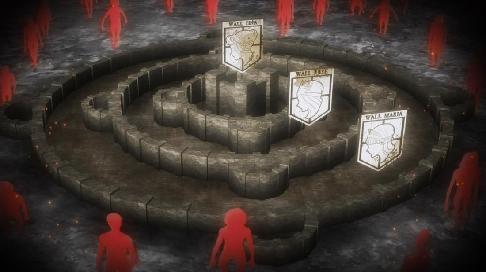
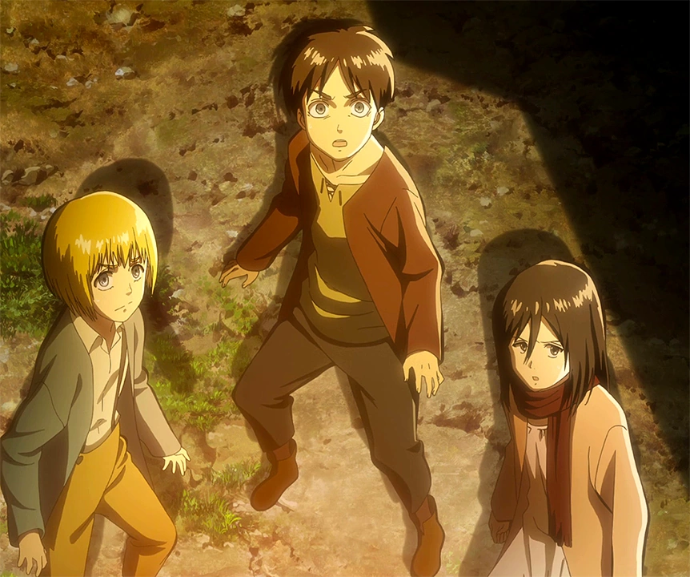
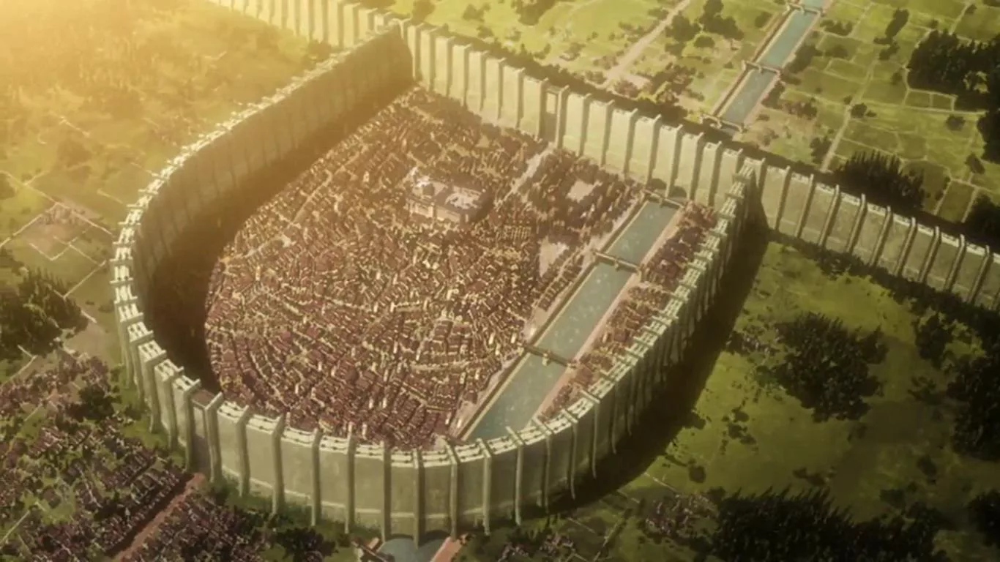

Shingeki conta a história de uma nação que vive presa devido à existência de estranhos titãs que se alimentam de pessoas. Para evitar que a humanidade acabe e com o intuito de proteção, foram criadas três muralhas: Maria, Rose e Sina.
Um ataque inesperado muda a vida dos moradores da muralha Maria, a mais externa. Um Titã maior que as paredes de 50 metros aparece, e outro, vestido com uma armadura, também entra no espaço, provocando uma invasão de titãs menores e um verdadeiro massacre com poucos sobreviventes.
Entre os sobreviventes estão o protagonista Eren Yeager, sua irmã adotiva Mikasa Ackerman e o melhor amigo deles, Armin Alert. Decididos a se vingar da destruição de sua infância, eles juram entrar na Divisão de Reconhecimento, uma divisão militar que busca explorar melhorias para a humanidade e, principalmente, matar titãs.
A história de Shingeki no Kyojin possui diversos personagens importantes para sua narrativa, mesmo tendo seu protagonismo em Eren, e entre esses nomes o que talvez seja mais crucial é entender suas classificações e papéis na narrativa.
seres de mais de três metros de altura com físicos humanóides diversos sem gênero ou desprovidos de raciocínio singular. Isso quer dizer que titãs nessa classificação não possuem nenhuma habilidade que não seja a de se alimentar de humanos.
esses são um total de sete, e possuem cada uma característica específica de poder além de aparência diferenciada. Eles foram criados de forma especial e individual, tendo que seu usuário se transforme em um Titã Simples e engula o portador anterior.
nação que, majoritariamente, mora dentro das muralhas (Ilha Paradis). São também conhecidos como “filhos de Ymir” e os únicos capazes de se transformarem em Titãs.
É a nação que derrotou os eldianos e os escraviza desde então. Já foram subjugados por eles, mas após a Grande Guerra, conseguiram a vitória e utilizam os poderes dos Titãs (eldianos) para derrotar as nações inimigas.
dentro das muralhas a divisão social é feita entre camponeses, comerciantes, militares, burgueses e realeza. Além disso, o sistema aplicado é o da Monarquia, ou seja, eles possuem um Rei ou Rainha, pertencentes a família Fritz ou Reiss, descendentes de Ymir.
A divisão militar é também muito forte dentro do sistema social, sendo três subdivisões, cada uma com seu comandante e com funções muito bem definidas. A Brigada da Polícia Militar, simbolizada por um unicórnio no brasão, possui a obrigação de manter a ordem dentro das muralhas. A Guarnição das Muralhas, com rosas no escudo, é responsável por vigiar e proteger as muralhas.
reconhecida pelas asas cruzadas como símbolo e possuir os melhores soldados, é responsável por recuperar territórios aclamados pelos titãs.
O autor, Hajime Isayama, nasceu em uma pequena vila em uma zona rural japonesa, e por isso seu maior sonho era explorar o mundo além dali. Ele transmite esse sonho através de Eren, que tinha a mesma meta. No entanto, a inspiração para a história surgiu quando o autor observou um bêbado tentando se comunicar com os demais presentes em um café, sem sucesso.
O autor também queria que sua personagem principal feminina fosse bem popular, e para isso, ele nomeou Mikasa através de um navio da Marinha Imperial Japonesa. Outra fonte de inspiração é um livro chamado Tales of the Heike, que conta a história de uma lendária guerreira japonesa.
Outra fonte de inspiração é a cidade alemã Nordlingen. Nela, há paredes redondas em volta da cidade que abriga pequenas vilas em seu interior, surgindo como referência às muralhas presentes na Ilha Paradis.
